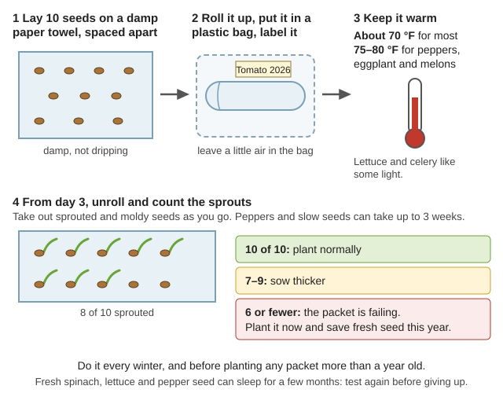
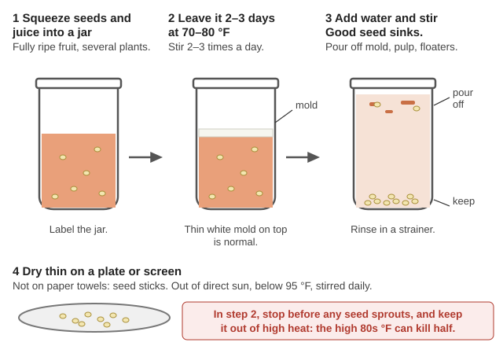
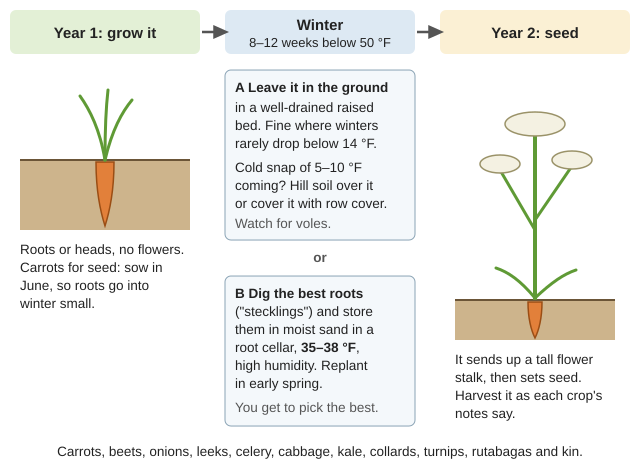
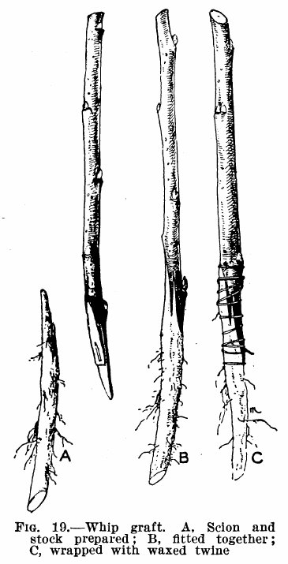
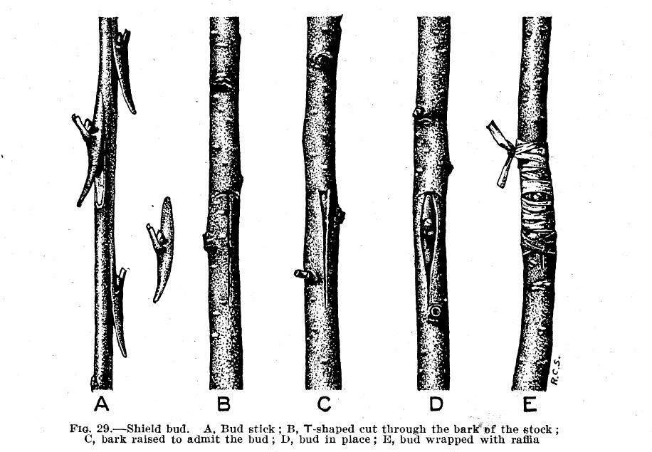
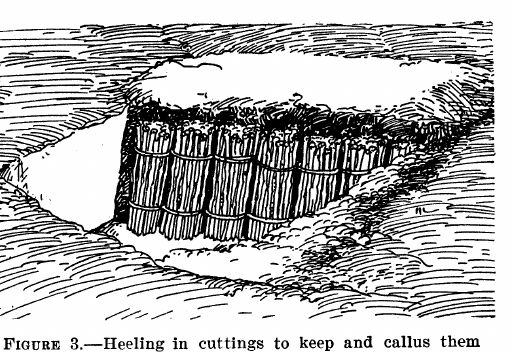

Guides › Food · Emergency · Index A–Z
How to keep a heirloom seed bank alive for good in the Illinois Valley: store it so it lasts, test it, plant each variety at the right time here, keep varieties from crossing, and save your own seed every year — including seed from the fruits (tomatoes, cucumbers, melons, squash, peppers). It ends with the calorie crops the kit is missing and how to propagate fruit trees and berries, whose seeds don't grow true. The manuals are in Gardening-Food\Seed-Saving, Gardening-Food\Fruit-Propagation and the rest of Gardening-Food\.
Written for the Heaven's Harvest "10 Year" seed bank. The company's list has 39 varieties (they note some may be swapped when seed is short), so check your own packets — the rules below are by crop, so they still apply.
The five rules of a seed bank
- Don't plant it all. Plant part of each packet; keep the rest sealed as a backup.
- Start saving seed in year one — the short-lived ones first: onions, leeks, sweet corn, peppers and okra keep only 1–2 years.
- Test germination every winter so you know what still sprouts before you need it.
- Know which varieties cross. Several in this kit cross with each other; save seed from only one of each group per year (or hand-pollinate).
- Vegetables aren't enough calories. Add potatoes, dry beans, a flour corn and grains.
Every variety in this kit is open-pollinated (heirloom): seed you save grows the same plant as long as it didn't cross with a relative. Hybrids ("F1" on a packet) don't come true — don't save from those. (OSA Seed Saving Guide, p. 5)
Family matters twice: relatives cross-pollinate, and they share pests and diseases, so rotate families around your beds (don't grow the same family in the same bed more than one year in three (rule of thumb)).
| Family | Kit varieties |
|---|---|
| Cabbage family (all one species, Brassica oleracea) | Brussels sprouts Long Island Improved · Broccoli Green Sprouting Calabrese · Cabbage Early Jersey Wakefield · Cauliflower Snowball · Collards Georgia Southern · Kale Vates |
| Turnip family (B. rapa) and rutabaga (B. napus) | Turnip Purple Top White Globe · Tendergreen mustard (komatsuna type) · Rutabaga American Purple Top |
| Radish | Radish Early Scarlet Globe |
| Squash family | Zucchini Black Beauty · Crookneck Golden Summer · Pumpkin Jack O'Lantern (these three cross; one species, many shapes) · Butternut Waltham · Cucumber Poinsett 76 and National Pickling · Cantaloupe Hales Best Jumbo · Watermelon Sugar Baby |
| Tomato family | Tomato Beefsteak, Roma, Large Red Cherry · Bell pepper California Wonder · Jalapeño Early · Eggplant Black Beauty |
| Beans and peas | Green bean Blue Lake 274 and Provider (bush) · Lima bean Henderson · Snap pea Sugar Ann |
| Onion family | Onion Sweet Spanish Yellow · Bunching onion White · Leek American Flag |
| Carrot family | Carrot Danvers · Celery Tall Utah |
| Beet family | Beet Detroit Dark Red · Spinach Nobel Giant / Bloomsdale |
| Others | Sweet corn Golden Bantam · Lettuce Buttercrunch · Okra Clemson Spineless · Asparagus Mary Washington (perennial) |
📚 Go deeper: OSA crop chart, pp. 25–27 — every crop's family, pollination and life cycle; Brassica Seed Production, p. 8 — which cabbage-family crops are which species.
Seed dies from heat and damp. Two rules from seed-storage research (Seed Processing and Storage, p. 9):
Where to keep it here:
How long seed stays good in ordinary cool, dry storage (Univ. of Illinois seed life table, p. 2; McCormack, p. 17):
| Years of good sprouting | Kit crops | What to do |
|---|---|---|
| 1–2 | Onion (1), leek, okra, pepper, sweet corn (2) | Grow these out and save fresh seed the first year. Store spare seed in the freezer. |
| 3 | Asparagus, beans, broccoli, carrot, celery, pea, spinach | Grow out and replace by year 3. |
| 4 | Beet, Brussels sprouts, cabbage, cauliflower, eggplant, kale, mustard, pumpkin, rutabaga, squash, tomato, turnip, watermelon | Replace by year 4. |
| 5–6 | Cantaloupe, collards, cucumber, radish (5), lettuce (6) | The long keepers. |
The "10 year" label is possible only with very cool, dry storage — in ordinary storage most of these last 3–5 years, so a seed bank survives by being grown and re-saved, not by sitting.
📚 Go deeper: OSA — where and how to store seed, p. 17; Seed Processing and Storage — drying with silica gel, p. 9; Seed Ambassadors zine — drying and freezing, p. 7.
Do this every winter, and before planting any packet more than a year old (what germination looks like). (OSA, p. 18; Univ. of Illinois, p. 1)

Ten seeds make the count easy to read as a share (a diagram drawn for this guide).Fresh spinach, lettuce and pepper seed can be dormant for a few months — retest before giving up on it.
📚 Go deeper: OSA germination test, p. 18; McCormack — germination testing, p. 20.
Dates are Oregon State's western valleys dates (Growing Your Own, p. 9); Medford-area gardens can go 7–10 days earlier and later. At Cave Junction the last spring frost averages May 1 but is after May 23 one year in ten, and the first fall frost averages Oct 12 — so in valley-floor frost pockets wait until late May or June for tomatoes, peppers, squash, melons, beans and corn. Winter-crop dates are from PNW 548, pp. 48–50.
| Crop (kit variety) | Start indoors (transplants) | Plant out / sow | Fall & winter crop | In-row spacing | Days to harvest* |
|---|---|---|---|---|---|
| Asparagus (Mary Washington) | 1 year ahead (grow crowns) | Feb–Mar | perennial | 12" | first picking year 3 |
| Bush beans (Blue Lake 274, Provider) | — | May–July | — | 2–6" | 50–60 |
| Lima (Henderson) | — | May–June, warm soil | — | 4–6" | 65–75 |
| Beet (Detroit Dark Red) | — | Mar–June | sow June–Aug, harvest Oct–Mar | 1–2" | 60 |
| Broccoli (Calabrese) | 6 weeks | Mar–Aug | transplant July for fall | 12–24" | 60–70 from transplant |
| Brussels sprouts (Long Island) | 6 weeks | May–July | transplant late May–June, harvest Oct–Mar | 24" | 90–100 |
| Cabbage (Early Jersey Wakefield) | 6 weeks | Apr–June | transplant mid-July–early Aug | 24" | 60–70 |
| Cantaloupe (Hales Best) | 4 weeks | May (late May in frost pockets) | — | 48" | 80–85 |
| Carrot (Danvers) | — | Mar–July 15 | sow May–July, harvest Oct–Mar | 2" | 70–75 |
| Cauliflower (Snowball) | 6 weeks | Apr–July 15 | transplant mid-July–early Aug | 24" | 55–70 |
| Celery (Tall Utah) | 9 weeks | Mar–July | — | 5" | 100–120 |
| Collards (Georgia Southern) | — | spring, or sow July | transplant June–Sept, harvest Sept–Apr | 24" | 75 |
| Cucumbers (Poinsett, Nat'l Pickling) | 4 weeks | May–June | — | 24" / 6–12" | 55–65 |
| Eggplant (Black Beauty) | 9 weeks | May–June, warm nights | — | 24" | 75–80 |
| Kale (Vates) | — | May–July | transplant June–Aug, harvest Sept–Apr | 24" | 55–65 |
| Leek (American Flag) | sow late Feb–Mar | transplant May–early Aug | harvest Nov–Apr | 2–6" | 120–130 |
| Lettuce (Buttercrunch) | 5 weeks | Apr–early June; avoid midsummer heat | transplant July–Aug | 12" | 55–65 |
| Mustard (Tendergreen) | — | Mar–Apr | transplant July–Aug, harvest Sept–Apr | 6" | 35–45 |
| Okra (Clemson Spineless) | 8 weeks | June, warmest spot (OSU lists it "not suitable" for western valleys; try it in a hot spot) | — | 18" | 55–60 in heat |
| Onion (Sweet Spanish Yellow) | 10 weeks (Jan) | Mar–May | — | 3" | 110–120 |
| Bunching onion (White) | — | Mar–May | sow Aug for May–June scallions | 1–2" | 60–70 |
| Pea (Sugar Ann) | — | Feb–May | — | 2" | 55–60 |
| Peppers (California Wonder, Jalapeño) | 10 weeks (late Feb) | May–June, warm nights | — | 12–18" | 65–75 from transplant |
| Pumpkin (Jack O'Lantern) | 4 weeks | May | — | 48" | 100–110 |
| Radish (Early Scarlet Globe) | — | Mar–Sept | sow Aug–Sept, harvest Nov–Feb | 1" | 25 |
| Rutabaga (American Purple Top) | — | June–July | harvest fall–March | 3–6" | 90–100 |
| Spinach (Nobel Giant / Bloomsdale) | — | Apr (Feb–Mar under cover) | sow Aug–Sept, harvest Nov–Feb | 3" | 45–50 |
| Summer squash (Crookneck, Zucchini) | 4 weeks | May–June | — | 24" | 50–60 |
| Winter squash (Waltham Butternut) | 4 weeks | May | — | 48" | 100–110 |
| Sweet corn (Golden Bantam) | — | May–June, in a block of 4+ rows | — | 15" | 75–85 |
| Tomatoes (Beefsteak, Roma, Cherry) | 8 weeks (early Mar) | May (late May in frost pockets) | — | 24–36" | 70–90 from transplant |
| Turnip (Purple Top White Globe) | — | Apr–Sept | sow Aug, harvest through Mar | 2" | 50–55 |
| Watermelon (Sugar Baby) | 4 weeks | May | — | 60" | 75–80 |
* Days to harvest are typical seed-catalog figures (rule of thumb); for transplants count from transplanting. The same OSU table gives how much to plant for a family of four — e.g. 10–15 tomato plants, 15–25 ft of bush beans, 30–40 ft of onions.
📚 Go deeper: Growing Your Own planting table, p. 9; PNW 548 winter crop table, p. 48; OSU Vegetable Gardening in Oregon — varieties, fertilizing, watering.
📚 Go deeper: Growing Your Own — Rogue Valley section, p. 21; Drip Irrigation in the Food Garden; Food Gardening with Less Water; Josephine County soil survey.
Plants that are pollinated by insects or wind cross with relatives of the same species flowering nearby (a bumblebee working a tomato flower). The seed looks fine; the next generation is a mix. Self-pollinating crops rarely cross. (OSA, pp. 6–8)
| Crossing group | Kit varieties | Solution |
|---|---|---|
| Cabbage family | Brussels sprouts, broccoli, cabbage, cauliflower, collards, Vates kale | Let only one flower each year (rotate which one), or cage them (Brassica Seed Production, p. 8) |
| Turnip family | Purple Top turnip × Tendergreen mustard | One per year. Rutabaga crosses with them only rarely, but separate it anyway (zine, p. 16) |
| Squash (C. pepo) | Zucchini × crookneck × Jack O'Lantern pumpkin | One per year, or hand-pollinate (below). Butternut is a different species and usually doesn't cross with them (Cucurbit Seed Production, p. 10) |
| Cucumbers | Poinsett 76 × National Pickling | One per year, or hand-pollinate. Cucumbers do not cross with melons or watermelon. |
| Peppers | California Wonder × Early Jalapeño | Separate widely or bag flowers — otherwise your bell peppers may come up hot (Pepper Seed Production, p. 7) |
| Carrot | Danvers × wild Queen Anne's lace | The wild carrot on every roadside here is the same species. Cage seed carrots and release flies inside, or remove wild carrot nearby (OSA, p. 7) |
| Beet | Detroit Dark Red × any chard or beet | Pollen travels miles on the wind — grow one beet/chard for seed per year |
| Corn | Golden Bantam × any neighbor's corn | Distance, or plant so it tassels at a different time from nearby corn |
| Spinach | Two spinach varieties | Wind-pollinated — one per year |
| Rarely cross | Tomatoes (old vs. modern flower), beans, peas, lettuce, lima | 10–40 ft apart is plenty |
| Don't cross each other | Sweet Spanish onion vs. White Bunching (usually A. fistulosum) vs. leek | Different species — check the packets |
How far apart and how many plants (home-use figures from OSA's chart, pp. 25–27; graph: crossing falls off with distance):
| Crop | Pollinated by | Life cycle | Isolation for home use | Plants to save from (minimum) |
|---|---|---|---|---|
| Tomato, bean, pea, lettuce | self | annual | 10 ft (heirloom tomatoes 40 ft) | 10–20 |
| Lima bean, okra | self + insects | annual | 40 ft / 800 ft | 40 |
| Sweet pepper / hot pepper | self + insects | annual | 160 ft / 800 ft | 10–20 / 40 |
| Eggplant | insects | annual | 1,600 ft (others say 75 ft) | 80 |
| Squash, pumpkin, cucumber, melon, watermelon | insects | annual | 1,600 ft | 10–20 |
| Radish | insects | annual | 1,600 ft | 80 |
| Cabbage family, turnip, rutabaga, mustard | insects | biennial (broccoli annual) | 1,600 ft | 80 |
| Carrot, onion | insects | biennial | 1,600 ft | 200 |
| Leek, celery | insects | biennial | 1,600 ft | 80 |
| Beet, spinach | wind | biennial / annual | 3,200 ft | 80 |
| Sweet corn | wind | annual | 1,600 ft (often more) | 200 |
The big numbers are what keeps a variety vigorous over many generations. Fewer plants still gives you seed — but save from as many good plants as you can, and pull out weak or odd-looking plants ("roguing") before they flower. (OSA, p. 9)
📚 Go deeper: Isolation Distances for Seed Crops, p. 18 — chart, barriers and timing; How to Save Seeds — isolation chart ; UGA Seed Saving starter guide.
Squash, pumpkin and cucumber — save pure seed even when relatives grow nearby (Cucurbit Seed Production, p. 12; male and female squash flowers; hand pollination):
Corn: cover young ear shoots with paper bags before silks appear; when silks show, bag a tassel that's shedding pollen, shake the pollen into the bag the next morning, pour it onto the silks and re-bag (OSA sweet corn guide, p. 6; bags and tools).
Cabbage family, carrots, peppers: cover them with a cage of row cover on hoops (row cover on hoops). Cabbage-family plants need insects to set seed (they can't pollinate themselves), so put flies or bees in the cage — or alternate-day caging: uncover only one variety each day and cover them all at night (Isolation Distances, p. 17).
📚 Go deeper: Cucurbit Seed Production, pp. 12–17; OSA sweet corn hand pollination, pp. 5–8; Isolation Distances — caging, p. 17.
Fruit crops have wet seed (seed saving): let the fruit get riper than you'd eat it, scoop out the seeds, clean them, and dry them. (OSA, pp. 15–16, 21–24)
Tomatoes — ferment them:

Ferment, add water, keep what sinks, dry on a plate (a diagram drawn for this guide).Cucumbers: leave the fruit on the vine 4–5 weeks past eating stage, until it's big, yellow to orange-brown and slightly soft. Scrape the seeds and pulp into a jar and ferment about 3 days at 70–75 °F like tomatoes; good seed sinks. (Cucurbit Seed Production, p. 18)
Melons and watermelon: seed is ripe when the fruit is ripe to eat. Scoop the seeds, rinse them in a strainer (watermelon can ferment 2–3 days), and dry. (OSA, pp. 22, 24)
Squash and pumpkins: leave on the vine until hard — a thumbnail won't dent it — and the stem dries. Summer squash for seed gets "about the size of your leg." Then store winter squash and pumpkins about 2 months (summer squash a few weeks) before cutting them open: the seed keeps filling out. Scoop, rinse, dry. Ferment no more than a day, if at all. (OSA, p. 24; Cucurbit Seed Production, p. 15)
Peppers: pick at full color (red for both kit peppers), hold them 7–10 days at room temperature, then cut them open and scrape out the seeds. Good seed is ivory, not brown. Seed from green peppers often won't sprout. Wear gloves for jalapeños. (OSA, p. 23; Pepper Seed Production, p. 9; ways to get the seed out)
Eggplant: leave the fruit until it turns dull brown and hard, 2–3 weeks past eating. Grate or blend the seedy end with water; good seed sinks. (OSA, p. 21)
Drying all of them: a thin layer out of direct sun, below 95 °F (dark seeds in sun can overheat at 80 °F), stirred daily. Small seeds are dry when they snap instead of bend. (OSA, p. 16)
📚 Go deeper: OSA — wet seed processing and fermentation, p. 15; Cucurbit Seed Production — fruit maturity and washing, p. 17; Seed Processing and Storage — wet processing, p. 5.
These dry on the plant; harvest, thresh (beat or stomp the seed out), and winnow (pour in a breeze to blow off chaff). (OSA, pp. 19–24; threshing box; winnowing in front of a fan)
📚 Go deeper: OSA crop-by-crop tips, pp. 19–24; OSA Bean Seed Production; OSA Lettuce Seed Production; OSA Spinach Seed Production.
Carrots, beets, onions, leeks, celery, cabbage, cauliflower, Brussels sprouts, collards, kale, turnips and rutabagas flower only after a winter (biennials; vernalization) — they need 8–12 weeks below 50 °F. (OSA, p. 4)

Biennials need a winter between the root and the seed: leave them in the bed, or dig the best and replant in spring (a diagram drawn for this guide).📚 Go deeper: OSA Carrot Seed Production; OSA Beet Seed Production; Climatic Considerations — Rogue Valley, pp. 20–21.
This kit is mostly vegetables — vitamins and variety, but not many calories. To live from a garden you also need:
📚 Go deeper: OSU Survival Basics — Food; Growing Your Own — amounts for a family of four, p. 9.
An apple seed grows a new, different apple tree — usually a poor one. Fruit trees are kept true by grafting a twig ("scion") of the variety you want onto a rootstock (whip-and-tongue graft, step by step). (Univ. of Minnesota Grafting and Budding; Univ. of Kentucky, p. 1)

Whip-and-tongue graft: cut both pieces alike, lock the tongues together with the inner bark lined up on at least one side, then wrap (USDA FB 1567, p. 35).
Budding (July–September): slip one bud from the variety under a T-cut in the rootstock's bark and tie it in (USDA FB 1567, p. 44).
Grape cuttings tied in bundles and buried in a trench until spring planting (USDA FB 471, p. 5).📚 Go deeper: Mississippi State Basic Grafting Techniques — illustrated step by step; Univ. of Kentucky Budding and Grafting; USDA Propagation of Trees and Shrubs; OSU Growing Tree Fruits and Nuts; PNW Training and Pruning.
Gardening-Food\ (USDA canning — vegetables; pickling vegetables): National Pickling cucumbers for pickles, Early Jersey Wakefield cabbage for sauerkraut (fermented foods), Romas for sauce and drying, jalapeños for salsa (salsa recipes).📚 Go deeper: USDA Complete Guide to Home Canning; PNW Freezing Fruits and Vegetables.
Look before you try it. 🖼️ = drawings in the books on this drive; 📷 = photos in the offline Wikipedia.
Storing and testing seed
Flowers and crossing
Hand-pollinating and caging
Cleaning seed
Biennials
Fruit trees and berries